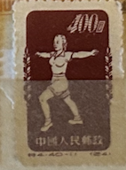
| SOURCE | TITLE| IMAGE MATCH | click to source page |
| eBay | Cina 1952 Mi. 152 Senza gomma 100% 400 $, Radio ginnastica | eBay | 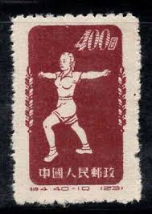 |
| eBay | People and ' Republic of China 151-153 block of four fine used / cancelled 1952 | eBay | 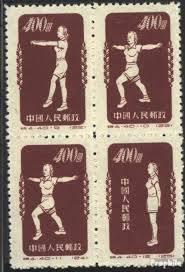 |
| eBay | China Stamps 1952 for sale | eBay | 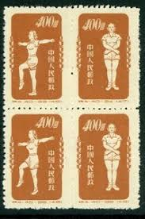 |
| eBay | China Stamps 1952 S4 Blocks Gymnastics by Radio 1952 MNH A-10 | eBay | 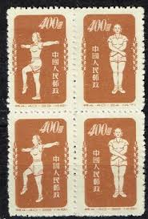 |
| Find Your Stamps Value | Physical Exercises - 体育锻炼$400 Sky blue stamp price, value | 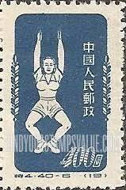 |
| eBay | 401 for sale | eBay | 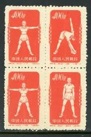 |
| eBay.de | Briefmarken aus China mit Radio-Motiv online kaufen | eBay.de | 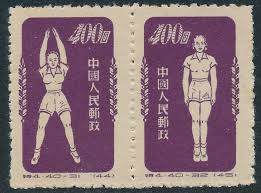 |
| eBay | Radio Chinese Stamps for sale | eBay | 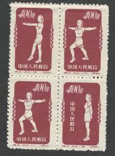 |
| Find Your Stamps Value | Prix du timbre Physical Exercises - 体育锻炼$400 Orange | 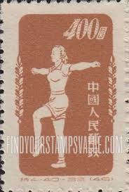 |
| Shutterstock | Moscow Russia August 18 2018 Stamp Stock Photo 1198705039 | Shutterstock | 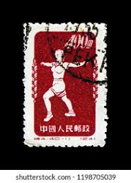 |
| eBay | China (PRC 149 MH CV $190.00 | eBay | 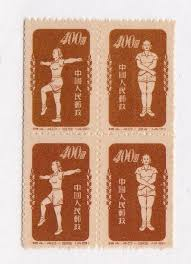 |
| eBay | Radio Chinese Stamps for sale | eBay | 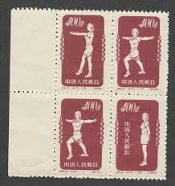 |
| Etsy | Lot of 6 Chinese Stamps “radio Gymnastics” 1952, Lot #608 - Etsy | 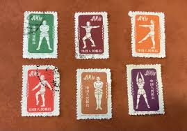 |
| PicClick | 1952 PRC CHINA S4 stamps used COMB.SHIPPING $0.01 - PicClick | 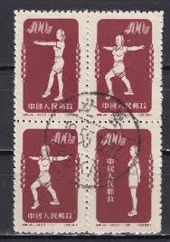 |
| eBay UK | China Stamps 1952 Gymnastics | eBay UK | 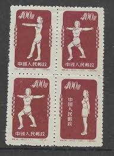 |
| eBay | PRC China, 1952, sc#143, Mint, VLH, NGAI, Gymnastics | eBay | 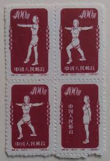 |
| eBay | 3 THREE OLD VINTAGE CHINESE STAMPS | eBay | 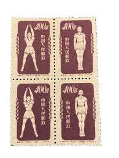 |
| eBay | PRC. 143. S4. 9-12. $400. Reprint. Gymnastics. Block of 4. CTO. NH. 1955 | eBay | 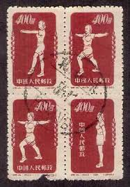 |
| Todocolección | china república popular, 1952. - Buy Antique stamps of China on todocoleccion | 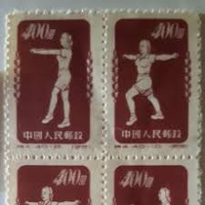 |
| PicClick UK | CHINA - 1952 Radio Gymnastics - $400 Red (reprint ?) MM £1.16 - PicClick UK | 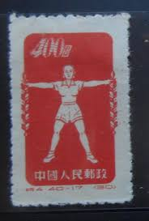 |
| PicClick FR | CHINE 1952 Radio Gymnastics Full set reprint ch601 EUR 30,00 - PicClick FR | 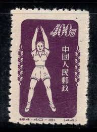 |
| eBay | China (PRC) 149 MH pair CV $20.00 | eBay | 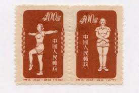 |
| PicClick | CHINA PRC STAMP W16 The Red Lantern钢琴伴唱红灯记1969 Used $56.00 - PicClick | 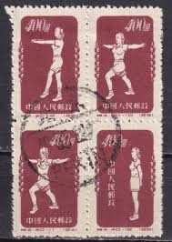 |
| lastdodo.fr | Timbres-poste de Chine - République populaire Catalogue de timbres - LastDodo | 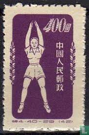 |
| Xabusiness.com | S4 Scott 141-150 Gymnastics by Radio - China Stamps | 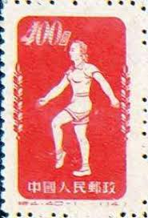 |
| eBay | Peoples Republic of China, #149, Mint NH LOG Block Physical Exercise 1952 | eBay | 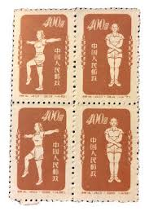 |
| eBay | 1956 Napoleon ND Good Luck Margarine In The Mix-Kwik Color Bag | eBay | 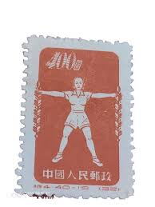 |
| eBay UK | Radio Chinese Stamps for sale | eBay UK | 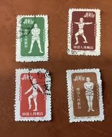 |
| Find Your Stamps Value | Prix du timbre Physical Exercises - 体育锻炼$400 Sky blue | 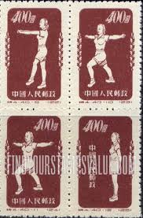 |
| eBay | China 1952 Mi. 147, 170, 157 Ohne Gummi 40% 400 $, Radiogymnastik | eBay | 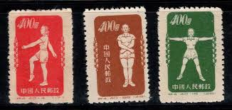 |
| eBay | Mint China Stamp | eBay | 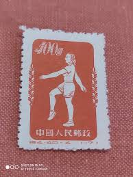 |
| HipStamp | China-1952-Sc# 142-Physical Exercises MNH Lower Half Sheet of 50 Stamps VF | Asia - China, General Issue Stamp / HipStamp | 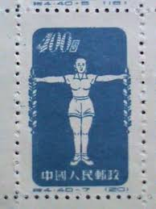 |
| Corner Block Stamps | Stamps - Corner Block Stamps | 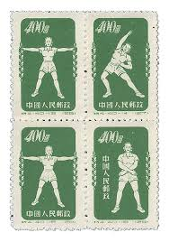 |
| BidCurios | CHINA 1952 Radio Gymnastics - Very Thin Transparent Paper 8 BLOCK UN USED - BidCurios | 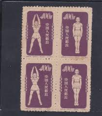 |
| HipStamp | China Set of 2 Exercise stamps Unused | Asia - China, Stamp / HipStamp | 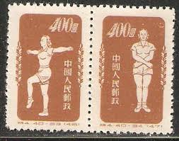 |
| HipStamp | Search "China 1952" / HipStamp | 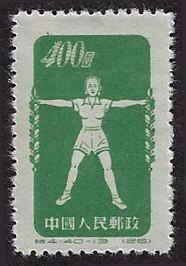 |
| eBay | 50298] PRC China 1952 Gymnastic 1st print Thin paper MNH | eBay | 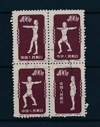 |
| Shutterstock | China Circa 1952 Stamp Printed China Stock Photo 175763885 | Shutterstock | 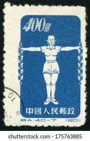 |
| Old Chinese Postage Stamps and Historical Figures | 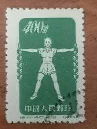 | |
| Find Your Stamps Value | Physical Exercises - 体育锻炼$400 Orange stamp price, value | 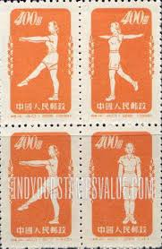 |
| Find Your Stamps Value | Physical Exercises - 体育锻炼$400 Red orange stamp price, value | 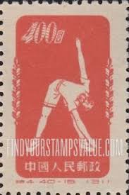 |
| eBay | CHINESE RADIO GYMNASTICS, COMMUNIST ERA STAMP BLOCK. UNHINGED | eBay | 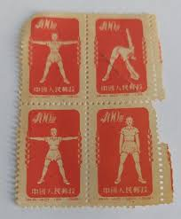 |
| Etsy | Lotto di 6 francobolli cinesi “Radio Gymnastics” 1952, lotto n. 608 - Etsy Italia | 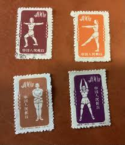 |
| eBay UK | Mint China Stamp | eBay UK | 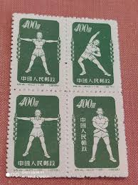 |
| eBay UK | Stamps from china 1940s-1960s some good values and one or two rare... | eBay UK | 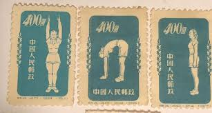 |
| commonprogram.science | Stamps & Banknotes 1949-1954 of the People's Republic of China 1949-1954. | 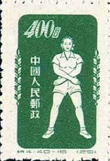 |
| HipStamp | China Stamp: 1952 Sc#145A Physical Exercises #17- Mnh- Stamp. Very Rare. | Asia - China, General Issue Stamp / HipStamp | 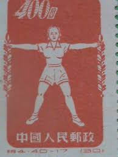 |
| PicClick UK | CHINA PR 1952 GYMNASTICS BY RADIO MNH no gum as issued Yang set S4R 40 stamps £47.50 - PicClick UK | 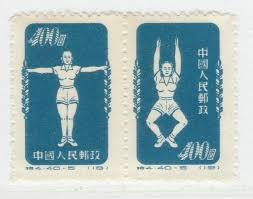 |
| Todocolección | china república - 1954 - puerta de la paz celes - Buy Antique stamps of China on todocoleccion | 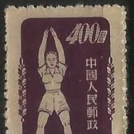 |
| ifs.rs | People's Republic Of China 1955 Radio Gymnastics Complete Set Used | |
| eBay | China PRC 147 MH top pair CV $20.00 | eBay | |
| eBay UK | China 1952 Mi. 148,152,153 MNG 100% Radio gymnastics | eBay UK | |
| Dreamstime.com | Postage Stamp Printed in China Shows Radio Gymnastics (7), Sport Serie, 400 Chinese Dollar, Circa 1952 Editorial Image - Image of 1952, postage: 171409570 | |
| eBay | China VR Michelnummer 167 II (44 ) ohne Gummi (Originalgummi) (europa:15577) | eBay | |
| eBay | China PR #147d MH CV$8.50 | eBay | |
| China stamps | ||
| eBay | China (PRC) 1952 Sc#145 "Physical Exercises #5" reprint Mint/NH VF | eBay | |
| Alamy | CHINA - CIRCA 2018: A stamps printed in China shows 2018-1 Wu Xu Year (Year of Dog) (2-1), Dog Guards Peace, 120 fen, 36 * 36 mm, circa 2018 Stock Photo - Alamy | |
| Todocolección | j) 1995 china, tree, multiple stamps, fdc - Buy Antique stamps of China on todocoleccion |